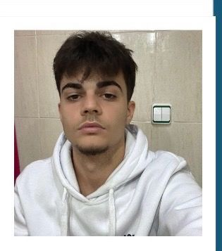

- Empece aprendiendo python y se me dio bastante bien , solo queria aprender sintaxis , logica , un lenguage de programacion , bucles... luego entendi mejor los conceptos basicos y aplicarlos a python aun con muchos fallos y errores pero sentia que iba mejorando y mi confianza iba aumentando.
- Despues me di cuenta que realmente lo que queria hacer yo que era dessarrollar webs desde cero y python no era el mejor camino para empezar.
- Entonces tenia que cambiar de rumbo y iba dejando python cada vez mas de lado aunque seguia aprendiendo cosas nuevas y me gustaba pero no era lo que realmente queria hacer, entonces me puse a aprender html y css y aprendi sobre estructuras web , textos y parrafos y me puse hacer mi primera practica con lo poco que sabia , y pense en crear mi propio blog web.
- En esta semana aprendi lo basico de HTML como pueden ser listas , enlaces , forms , imagenes ,rutas...
- Despues hize mi proyecto con lo que sabia de HTML , todavia sin saber nada de CSS.
- Y por ultimo , me adentre en lo basico de CSS .
- Un error que cometi al princio era intentar memorizar todo lo aprendido , pero me di cuenta que no valia la pena y que eso solo te traia ansiedad y problemas , entonces la manera mas efectiva de aprender era practicando y no solo memorizando.
- El segundo error que tuve fue no dedicar suficiente tiempo a la práctica y a la resolución de problema y dedicar mas tiempo solo a ver cursos.
- Y de momento no tengo mas errores que mencionar pero estoy seguro de que seguiré aprendiendo y mejorando.
- Aprender sobre JavaScript (funciones,arrays,objetos,DOM,fetch) y su integración con HTML y CSS.
- Aprender mas sobre html y css (forms,imagenes,links,box model,grid,flex box) y crear mi propio sitio web desde cero
- Aprender react (props,state,hooks) y su integración con HTML y CSS.
- Aprender CSS avanzado (animations, transitions, responsive design)
- Aprender sobre backend (Node.js, Express, APIs rest, middlewares, login) y su integración con el frontend.
- Aprender sobre bases de datos (SQL, MongoDB) y su integración con el backend.
- Aprender JWT (JSON Web Tokens) , seguridad basica , roles de usuario
- Usar herramientas como docker(basico), testing basico, organización de proyectos, separar frontend y backend
- Crear proyectos personales para aplicar lo aprendido y seguir mejorando mis habilidades de desarrollo web,aunque estoy empezando a hacer proyectos desde ya.
- Convertirme en un desarrollador web full stack competente y capaz de crear aplicaciones web completas y funcionales, y seguir aprendiendo y mejorando mis habilidades de desarrollo web a lo largo del tiempo.
- En conclusion , estoy muy contento con mi progreso en estos primeros dias de aprendizaje de desarrollo web, aunque se que tengo mucho por aprender y mejorar. Pero estoy motivado y comprometido a seguir aprendiendo y mejorando mis habilidades de desarrollo web a lo largo del tiempo, y espero poder alcanzar mis objetivos a corto,medio y largo plazo , aunque se que es un proceso largo y lento pero satisfactorio.
